Bauen. Sanieren. Erhalten.Bauunternehmen für Landsberg und den Ammersee
Altbausanierung, Hochbau, Putz, Bad und Trockenbau aus einer Hand — seit 1994 unter Maurermeister Norbert Wiesenbach. Vom Schnurgerüst bis zur fertigen Wand.
- 1994gegründet
- MeisterNorbert Wiesenbach
- EpfachLandsberg & Ammersee
Ein Maurermeister, der den Altbau genauso kann wie den Rohbau.
Die W&W Bau GmbH besteht seit 1994. Gegründet hat sie Norbert Wiesenbach — Maurerlehre, Vorarbeiter in mehreren Hochbauunternehmen, 1992 die Meisterprüfung, dann der eigene Betrieb. Zeitweise mit fünfzehn Angestellten im Schwerpunkt Hochbau und Altbausanierung, zwischendurch Immobilienprojekte in Florida und Kalifornien.
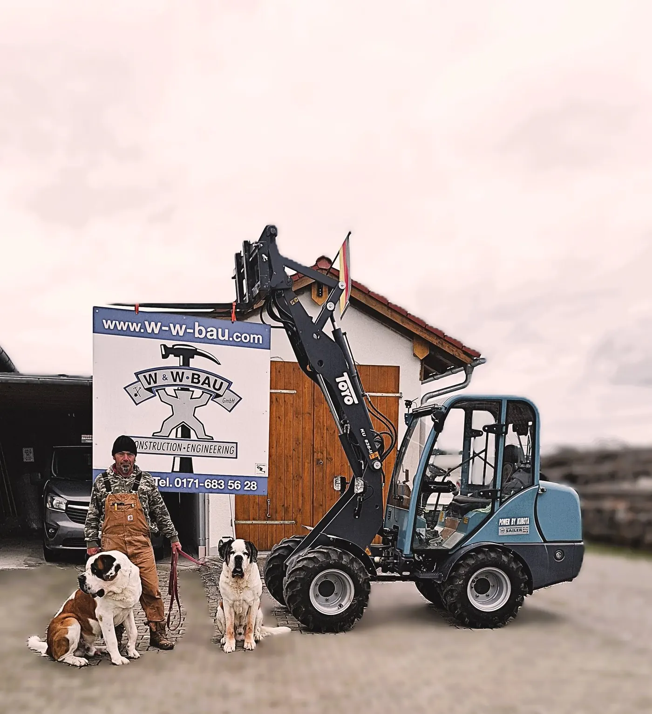
- 1994W&W Bau GmbH gegründet
- 1992Meisterprüfung
- 15Mitarbeiter zu Spitzenzeiten
- 7Leistungsbereiche
Was gemauert, verputzt oder ausgebaut wird, kommt von uns.
Sieben Bahnen, ein Betrieb: Fahren Sie über eine Bahn — sie geht auf.
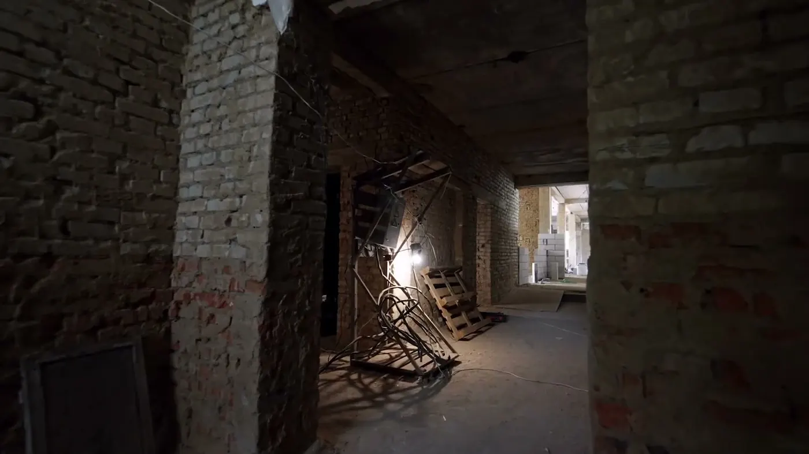
01AltbausanierungHaus, Wohnung, Bauernhof — statt Abriss.Ansehen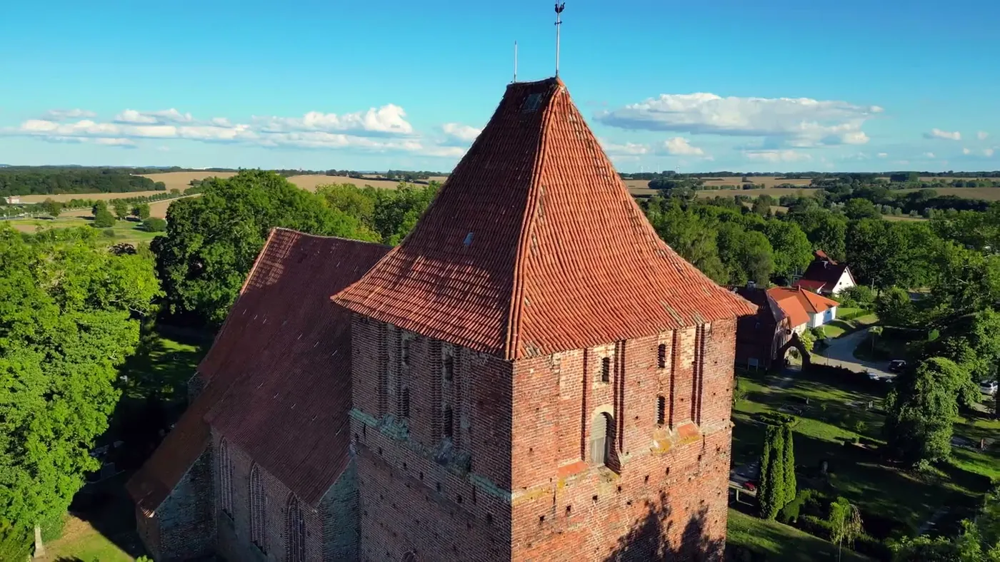
02DenkmalschutzHistorische Gebäude mit Liebe zum Detail.Ansehen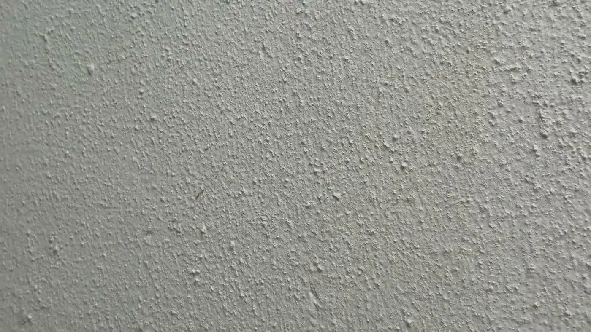
03Verputz & MauerwerkFassade, Dekorputz, Putzsanierung.Ansehen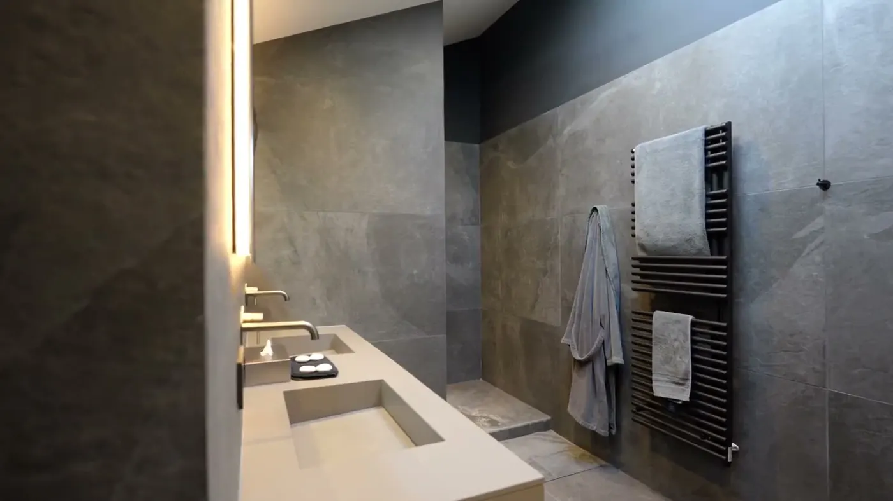
04BadsanierungVon der Entkernung bis zum fertigen Bad.Ansehen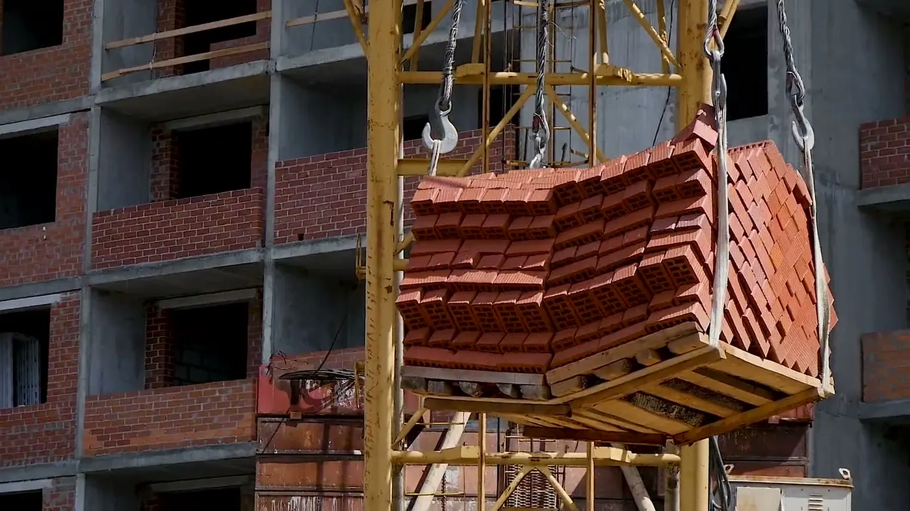
05Hochbau & RohbauRohbau, Um- und Anbauten aller Art.Ansehen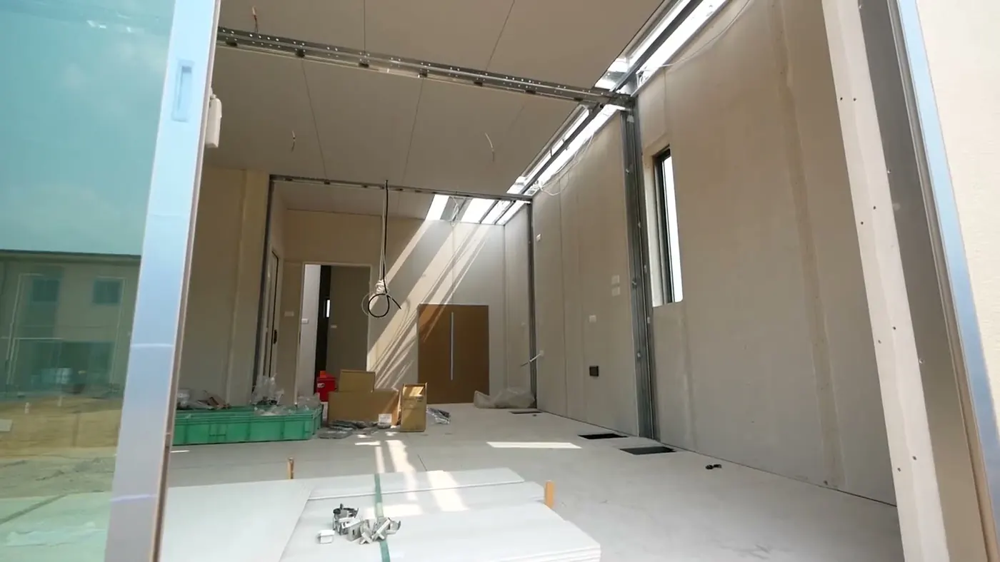
06TrockenbauWände, Decken, Unterkonstruktionen.Ansehen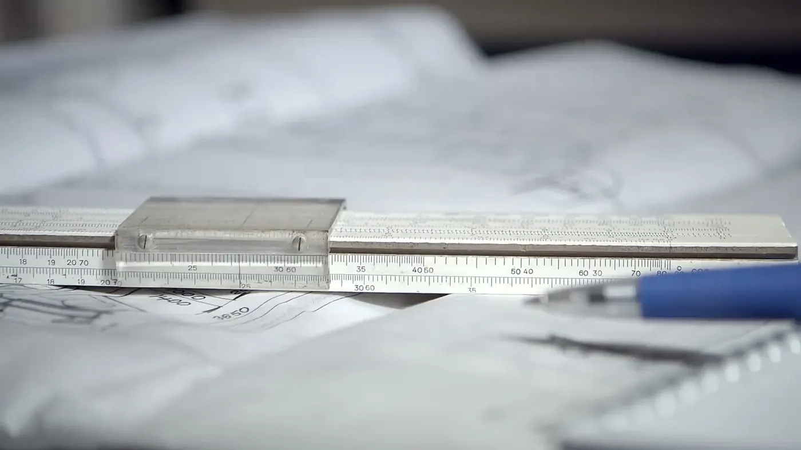
07Planung & BauleitungWerkplanung, Bauleitung, Vermessung, Beratung.AnsehenErst die Schnur, dann die Wand.
- 01SchnurgerüstBevor die erste Wand steht, stehen die Schnüre: Wir stecken ab und messen ein — auf den Zentimeter.
- 02BodenplatteBewehrung, Schalung, Beton. Der Teil, den später niemand sieht und auf dem alles steht.
- 03MauerwerkZiegel oder Ytong, Lage für Lage im Lot — vom Maurermeister geführt.
- 04DeckeFiligrandecke geliefert, versetzt, vergossen. Das Haus bekommt sein Geschoss.
- 05Putz & AusbauInnen und außen verputzt, Bad und Trockenbau — bis das Haus fertig ist.
- 06DachDas setzt der Zimmerer — ein Partner, mit dem wir seit Jahren bauen. Wir koordinieren, bis es dicht ist.
Abriss ist teuer. Erhalten ist Handwerk.
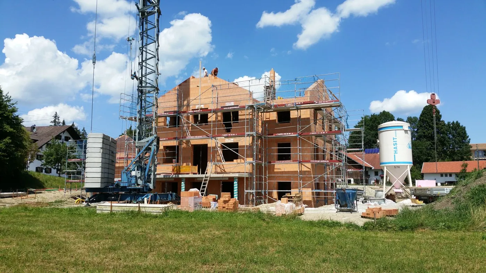
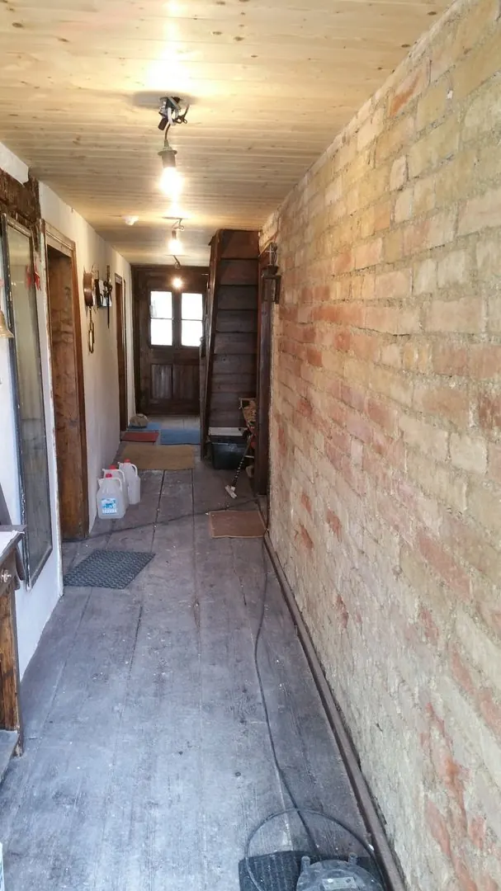
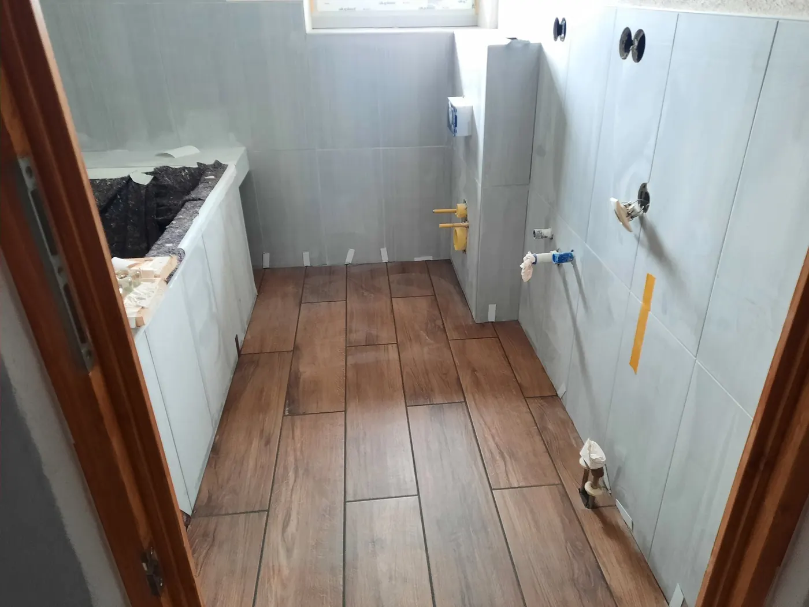
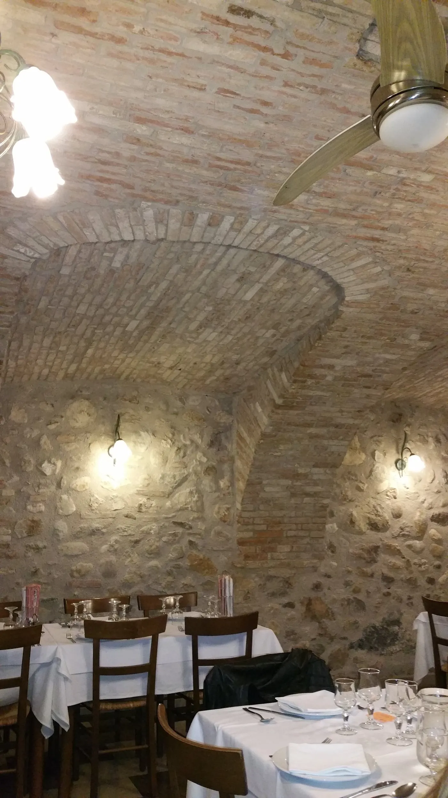
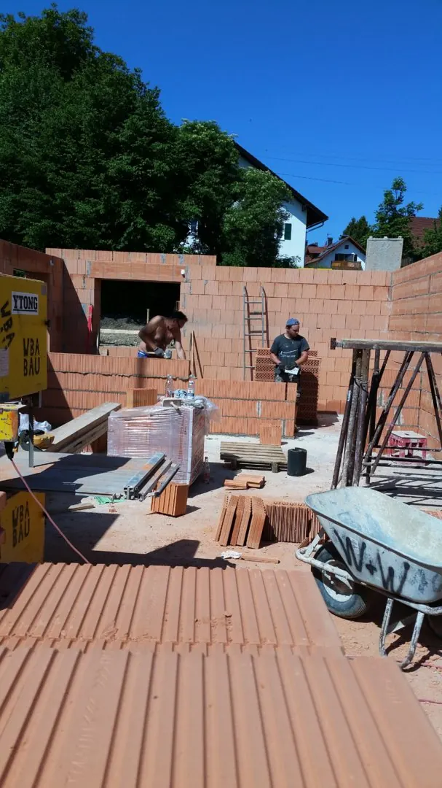
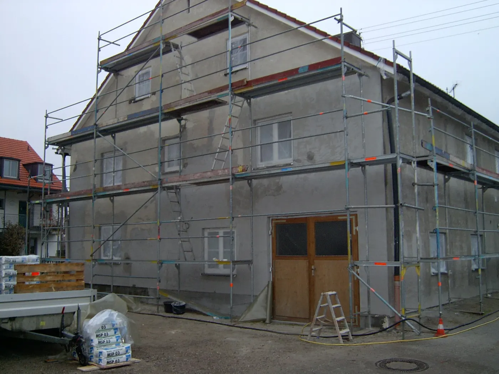

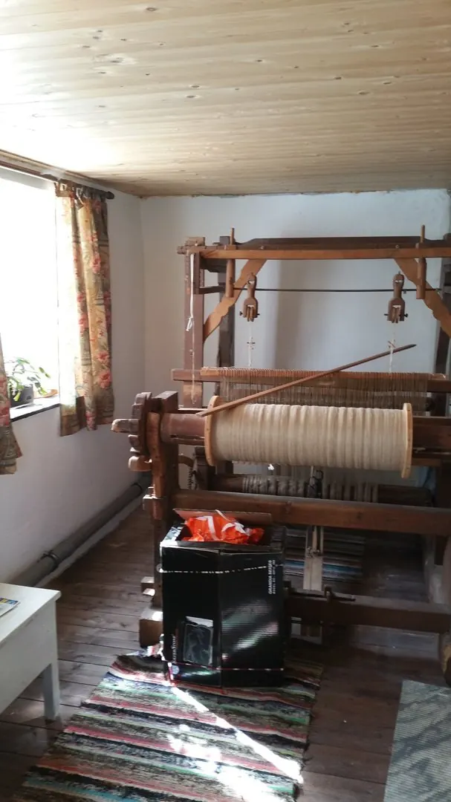
Vom Sitz aus gespannt: Landsberg, Ammersee, Schongau.
Unser Sitz ist Epfach an der B17 zwischen Landsberg und Schongau. Die Schnüre zeigen die Luftlinie — in einer halben Stunde sind wir auf jeder Baustelle im Landkreis. Wer weiter weg wohnt, darf trotzdem fragen.
Ringe: 15 und 30 km um Epfach · Prinzipdarstellung
Was Bauherren oft fragen
Was Bauherren uns am Telefon zuerst fragen — kurz beantwortet.
Ihre Frage steht nicht dabei? Rufen Sie an — Norbert Wiesenbach ist selbst am Telefon.
0171 6835628Machen Sie auch kleine Aufträge?
Ja. Ein Bad, ein Durchbruch, eine Fassade, eine Trockenbauwand — die kleinen Baustellen gehören genauso dazu wie der Rohbau.
Kommen Sie zum Ortstermin vorbei?
Immer. Ohne Ortstermin gibt es kein verbindliches Angebot — und keinen Termin, den wir halten können.
Arbeiten Sie mit anderen Handwerkern zusammen?
Ja, mit festen Partnern für Sanitär, Elektro, Fliesen, Gerüst und Dach. Wir koordinieren, Sie haben einen Ansprechpartner.
Wie schnell können Sie anfangen?
Das hängt an der Auslastung. Rufen Sie an — wir sagen Ihnen am Telefon, ob es Wochen oder Monate sind, statt Sie hinzuhalten.
Reden wir über Ihr Bauvorhaben.
Rufen Sie an oder schreiben Sie kurz, worum es geht. Der Rest läuft an drei Nägeln entlang:
- Anruf oder NachrichtSie sagen, was ansteht — am Telefon oder über das Formular.
- OrtsterminWir kommen vorbei, messen und schauen uns den Bestand an. Kostenlos.
- Klares AngebotEin Preis, ein Zeitplan, ein Ansprechpartner — dann geht es los.